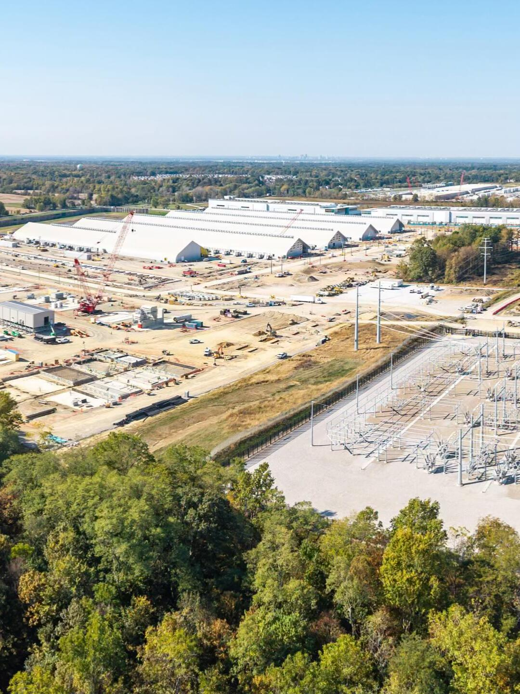
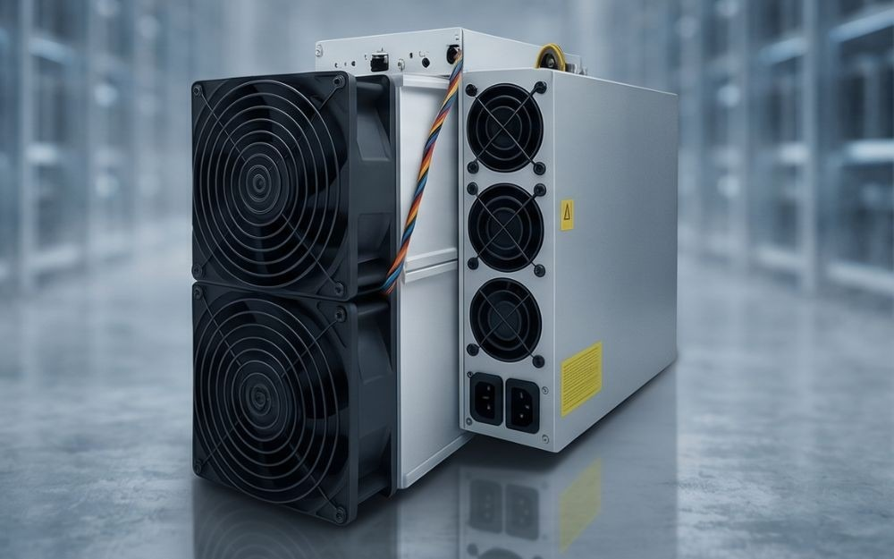

Energy Infrastructure
Renewable power generation, power sourcing, storage, grid interconnection and site-level electrical systems engineered around large digital loads.
Renewable Power GenerationTerraHash Energy develops renewable-energy-powered digital infrastructure — connecting power generation, grid and storage systems with high-performance compute environments for AI, HPC and digital asset applications.
TerraHash is built around the natural connection between energy and computation. Renewable power and electrical infrastructure form the physical foundation; data-center-grade compute systems convert that power into productive digital workloads; software and blockchain applications sit above the infrastructure layer. Bitcoin is one supported compute use case — not the definition of the company.
The platform is structured in three layers so partners and investors can clearly understand where TerraHash creates infrastructure value and where downstream digital applications fit.
Renewable power generation, power sourcing, storage, grid interconnection and site-level electrical systems engineered around large digital loads.
Renewable Power GenerationData-center environments, power distribution, cooling, networking, monitoring and specialized compute hardware supporting high-density digital workloads.
ASIC & High Performance Computing InfrastructureSoftware, blockchain integrations and digital asset systems that run on top of physical energy and compute infrastructure.
Blockchain Applications & Digital Asset Systems
TerraHash’s compute thesis extends beyond any single application. The infrastructure layer is designed around the requirements common to modern high-density computing: reliable electricity, power conversion, thermal management, network connectivity, physical site operations and real-time performance visibility.
Electrical architecture and site systems designed for large, continuous digital workloads.
Infrastructure pathways for accelerated computing, inference, training and other high-performance workloads.
Support for ASIC and other purpose-built systems where workload economics align with site and energy conditions.
Monitoring and operating data connecting power consumption, uptime, thermal conditions and compute performance.
The company is positioned around a broader infrastructure chain rather than a Bitcoin-only identity.
Generation, sourcing, storage and grid infrastructure.
Power, cooling, networking and data-center-grade operating systems.
High-performance workloads, accelerated computing and specialized compute capacity.
Blockchain workloads, Bitcoin compute and other digital asset infrastructure applications.
Wallets, blockchain integrations and digital asset services are presented as downstream technology layers — not as the company’s primary identity.
Compute environments can support accelerated computing, AI inference and training, data-intensive workloads and other high-density applications where energy and infrastructure economics matter.
Digital asset infrastructure includes specialized compute, blockchain data systems, custody interfaces and technology layers that connect physical compute with blockchain-native applications.
Explore Self-Custody Wallet Access ↗Trust Wallet is referenced as an external industry example.
NEXUS connects TerraHash’s digital application layer with on-chain exchange infrastructure, enabling blockchain-based trading, liquidity access and asset settlement.

Bitcoin mining is one form of specialized digital compute. ASIC machines perform SHA-256 calculations for the Bitcoin network and require the same core infrastructure disciplines found across other power-dense computing environments: electricity, distribution, cooling, networking, maintenance and operational intelligence.
Purpose-built processors optimized for Bitcoin SHA-256 computation.
Transformers, distribution and site electrical systems supporting dense continuous loads.
Air, liquid or immersion cooling plus maintenance and uptime management.
Monitoring of fleet efficiency, uptime and productive computational output.
TerraHash connects renewable power, physical infrastructure and high-performance computing to support the next generation of AI, HPC, blockchain and digital asset applications.
Connect with TerraHash